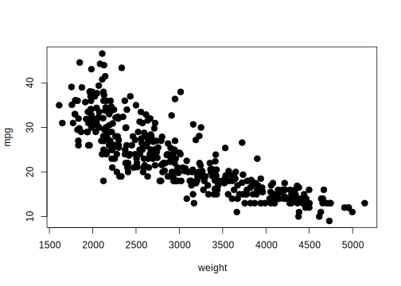
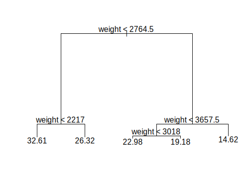
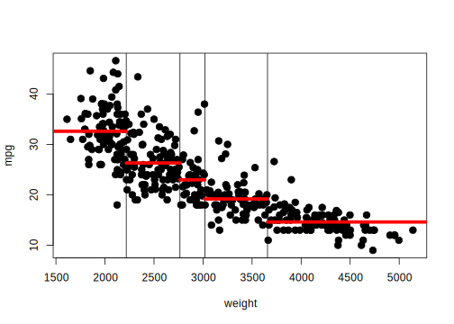
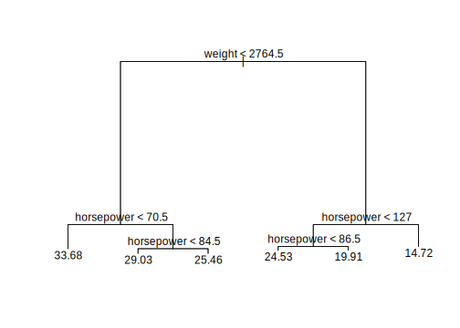

30 Solving linear ML problems
In this unit we address the question: How to fit the type of analysis methods we’ve seen so far?
We saw previously that learning methods based on group-by and summarize type of workflows, e.g., trees and LDA can be fit efficiently using a shared-nothing parallel architecture like Map-Reduce. This leaves other learning methods we have seen, like linear and logistic regression. In those cases, the key insight to answer this question is to recognize that these methods were presented as optimization problems and we can devise optimization algorithms that process data efficiently.
We will use linear regression as a case study of how this insight would work.
30.1 Case Study
Let’s use linear regression with one predictor, no intercept as a case study.
Given: Training set \(\{(x_1, y_1), \ldots, (x_n, y_n)\}\), with continuous response \(y_i\) and single predictor \(x_i\) for the \(i\)-th observation.
Do: Estimate parameter \(\beta_1\) in model \(y=\beta_1 x\) to solve
\[ \min_{\beta_1} L(\beta_1) = \frac{1}{2} \sum_{i=1}^n (y_i - \beta_1 x_i)^2 \]
And suppose we want to fit this model to the following (simulated) data:
set.seed(1234)
true_beta <- 5
x <- runif(100, -10, 10)
y <- x * true_beta + rnorm(100, mean=0, sd=sqrt(10))
plot(x,y,pch=19,cex=1.4,main="Simulated Data", cex.lab=1.5, cex.main=2)
abline(a=0, b=true_beta, col="red", lwd= 2)Our goal is then to find the value of \(\beta_1\) that minimizes mean squared error. This corresponds to finding one of these many possible lines:

Each of which has a specific error for this dataset:

Insights:
As we saw before in class, loss is minimized when the derivative of the loss function is 0
and, the derivative of the loss (with respect to \(\beta_1\) ) at a given estimate \(\beta_1\) suggests new values of \(\beta_1\) with smaller loss!
Let’s take a look at the derivative:
\[ \frac{\partial}{\partial \beta_{1}} L(\beta_1) = \frac{\partial}{\partial \beta_{1}} \frac{1}{2} \sum_{i=1}^n (y_i - \beta_1 x_i)^2 \\ {} = \sum_{i=1}^n (y_i - \beta_1 x_i) \frac{\partial}{\partial \beta_1} (y_i - \beta_1 x_i) \\ {} = \sum_{i=1}^n (y_i - \beta_1 x_i) (-x_i) \]
and plot it for our case study data:

30.2 Gradient Descent
This plot suggests an algorithm:
- Initialize \(\beta_1=0\)
- Repeat until convergence
- Set \(\beta_1 = \beta_1 + \alpha \sum_{i=1}^n (y_i - f(x_i)) x_i\)
This algorithm is called gradient descent in the general case.
The basic idea is to move the current estimate of \(\beta_1\) in the direction that minimizes loss the fastest. Another way of calling this algorithm is Steepest Descent.
This is a full implementation of this algorithm in R:
# Implementation of gradient descent for least squares regression
# for a single predictor (x)
#
# There is some code here that is only used to generate illustrative plots and would not be part of real solver
gradient_descent <- function(x, y, tol=1e-6, maxit=50, plot=FALSE) {
# initialize estimate
beta_1 <- 0; old_beta_1 <- Inf; i <- 0; beta_keep <- NA
# compute loss at first estimate
loss <- compute_loss(beta_1, x, y); loss_keep <- NA
# starting step size
alpha <- 1e-3
difference <- Inf
# check for convergence
# (in practice, we do include a limit on the number of iterations)
while ((difference > tol) && (i < maxit)) {
cat("it: ", i, " beta: ", round(beta_1, 2), "loss: ", round(loss, 2), " alpha: ", round(alpha, 6), "\n")
# this piece of code just adds steps to an existing plot
if (plot && !is.na(beta_keep) && !is.na(loss_keep)) {
suppressWarnings(arrows(beta_keep, loss_keep, beta_1, loss, lty=2, col="blue"))
}
# store the last estimate for plotting
beta_keep <- beta_1; loss_keep <- loss;
# store the last estimate to check convergence
old_beta_1 <- beta_1
# update estimate
f <- beta_1 * x
resid <- y - f
beta_1 <- beta_1 + alpha * sum(resid * x)
# compute difference after taking step
# to check convergence
difference <- (beta_1 - old_beta_1)^2 / (old_beta_1)^2
# compute loss and derivative for updated estimate
loss <- compute_loss(beta_1, x, y)
i <- i+1
# shorten the step size
if ((i %% 3) == 0) alpha <- alpha / 2
}
if (plot) {
suppressWarnings(arrows(beta_keep, loss_keep, beta_1, loss, lty=2, col="blue"))
}
beta_1
}Let’s run this algorithm and track what it does:

## it: 0 beta: 0 loss: 405.87 alpha: 0.001
## it: 1 beta: 16.11 loss: 2004.46 alpha: 0.001
## it: 2 beta: -19.85 loss: 9969.82 alpha: 0.001
## it: 3 beta: 60.41 loss: 49659.42 alpha: 5e-04
## it: 4 beta: -29.17 loss: 18852.85 alpha: 5e-04
## it: 5 beta: 26.02 loss: 7159.08 alpha: 5e-04
## it: 6 beta: -7.98 loss: 2720.28 alpha: 0.00025
## it: 7 beta: 2.5 loss: 104.56 alpha: 0.00025
## it: 8 beta: 4.51 loss: 8.19 alpha: 0.00025
## it: 9 beta: 4.89 loss: 4.64 alpha: 0.000125
## it: 10 beta: 4.93 loss: 4.55 alpha: 0.000125
## it: 11 beta: 4.95 loss: 4.52 alpha: 0.000125
## it: 12 beta: 4.96 loss: 4.51 alpha: 6.2e-05This algorithm is referred to as “Batch” gradient descent, since we take a step (update \(\beta_1\)) by calculating derivative with respect to all \(n\) observations in our dataset. For clarity, let’s write out the update equation again:
\[ \beta_1 = \beta_1 + \alpha \sum_{i=1}^n (y_i - f(x_i, \beta_1)) x_i \]
where \(f(x_i) = \beta_1 x_i\).
For multiple predictors (e.g., adding an intercept), this generalizes to the gradient i.e., the vector of first derivatives of loss with respect to parameters.
In this case, the model sets \(f(\mathbf{x}_i, \mathbf{\beta}) = \beta_0 + \beta_1 x_{i1} + \cdots + \beta_p x_{ip}\)
and the gradient given by partial derivatives for each parameter
\[ \nabla_{\mathbf{\beta}}L(\mathbf{\beta}) = \left[ \begin{array}{c} \frac{\partial L(\mathbf{\beta})}{\partial \beta_0} \\ \frac{\partial L(\mathbf{\beta})}{\partial \beta_1} \\ \vdots \\ \frac{\partial L(\mathbf{\beta})}{\partial \beta_p} \\ \end{array} \right] \]
The update equation is exactly the same for least squares regression
\[ \mathbf{\beta} = \mathbf{\beta} + \alpha \sum_{i=1}^n (y_i - f(\mathbf{x}_i, \beta)) \mathbf{x}_i \]
where \(f(\mathbf{x}_i, \mathbf{\beta}) = \beta_0 + \beta_1 x_{i1} + \cdots + \beta_p x_{ip}\) and \(\mathbf{x}_i\) is the vector of data values for entity \(i\) with an additional entry of 1 to account for the intercept parameter \(\beta_0\):
\[ \mathbf{x}_i = \left[ \begin{array}{c} 1 \\ x_{i1} \\ x_{i2} \\ \vdots \\ x_{ip} \end{array} \right] \]
Gradiest descent falls within a family of optimization methods called first-order methods (first-order means they use derivatives only). These methods have properties amenable to use with very large datasets:
- Inexpensive updates
- “Stochastic” version can converge with few sweeps of the data
- “Stochastic” version easily extended to streams
- Easily parallelizable
Drawback: Can take many steps before converging
30.2.1 Logistic Regression
Gradient descent is also used to solve the logistic regression problem. The same procedure follows: (1) define a loss function; (2) derive the update equation; (3) run the iterative gradient descent algorithm. Let’s take a look at the first two steps in this case.
For logistic regression, we turn to maximum likelihood to formulate a loss function. We mentioned this concept previously, but it follows directly from the “inverse problem” view of data analysis we have been using throughout this unit. For logistic regression, we will assume that the data is generated from a Bernoulli probability distribution. Once we make that assumption, we setup an inverse problem that looks for parameter values that maximizes the probability of the data we observe under this assumption.
For the logistic regression problem we are given dataset \(\{\langle \mathbf{x}_1, y_1\rangle, \ldots, \langle \mathbf{x}_n, y_n \rangle \}\), where outcomes \(y_i \in \{0,1\}\) since we are learning a binary classification problem. The goal is to estimate parameters \(\mathbf{\beta}\) in model
\[ \log{ \frac{p(Y=1 | \mathbf{X}=\mathbf{x})}{1-p(Y=1 | \mathbf{X}=\mathbf{x})}} = \beta_0 + \beta_0 x_{1} + \cdots + \beta_p x_{p} \] To establish a loss function we first assume a model for data generation. The assumption we make here is if an entity has attribute values \(\mathbf{x}\), then the outcome \(Y\) is a \(\mathrm{Bernoulli}(p(\mathbf{\beta}; \mathbf{x}))\) random variable and derive this probability from the equation above as
\[ p(\mathbf{\beta}; \mathbf{x}) = \frac{e^{f(\mathbf{\beta}; \mathbf{x})}}{1+e^{f(\mathbf{\beta}; \mathbf{x})}} \]
Note that we use the same notation \(f(\mathbf{\beta}; \mathbf{x})\) as we did in linear regression.
Now, we can ask, what is the probability of the data we observe for entity \(i\) under this model? We can write this probability in this form:
\[ p(\mathbf{\beta}; \mathbf{x}_i)^{y_i}(1-p(\mathbf{\beta};\mathbf{x}_i))^{(1-y_i)} \]
Note that this expression equals \(p(\mathbf{\beta};\mathbf{x}_i)\) if \(y_i=1\) and \(1-p(\mathbf{\beta}; \mathbf{x}_i)\) othwerwise, which is the behavoir we desire for this probability model.
Now, we can put these together for all observed entities since we assume that these are generated independently to get a likelihood function:
\[ \mathcal{L}(\mathbf{\beta}) = \prod_{i=1}^n p_i(\mathbf{\beta}; \mathbf{x}_i)^{y_i}(1-p_i(\mathbf{\beta};\mathbf{x}_i))^{(1-y_i)} \]
Now, we need to turn this into a loss function we can minimize. The likelihood function we wrote down is one we would maximize. Also, it is usually more convenient to work with the logarithm of likelihoods. So the loss function we use for gradient descent is the negative log likelihood
\[ L(\mathbf{\beta}) = \sum_{i=1}^n -y_i f(\mathbf{\beta}; \mathbf{x}_i) + \log(1+e^{f(\mathbf{\beta};\mathbf{x}_i)}) \]
We leave this derivation as an exercise, but note that
\[ \log{p(\mathbf{\beta};\mathbf{x}_i)} = f(\mathbf{\beta};\mathbf{x}_i) - \log{(1+e^{f(\mathbf{\beta};\mathbf{x}_i)})} \]
and
\[ \log{(1-p(\mathbf{\beta};\mathbf{x}_i))} = - \log{(1+e^{f(\mathbf{\beta};\mathbf{x}_i)})} \]
So, now that we have a loss function, we need to derive it’s gradient to use the gradient descent algorithm.
\[ \begin{aligned} \nabla_{\mathbf{\beta}}L(\mathbf{\beta}) & = & \nabla_{\mathbf{\beta}} \sum_{i=1}^n -y_i f(\mathbf{\beta};\mathbf{x}) + \log{(1+e^{f(\mathbf{\beta}; \mathbf{x}_i)})} \\ {} & = & \sum_{i=1}^n -y_i \nabla_{\mathbf{\beta}}f(\mathbf{\beta};\mathbf{x}_i) + \nabla_{\mathbf{\beta}} \log{(1+e^{f(\mathbf{\beta};\mathbf{x}_i)})}\\ {} & = & \sum_{i=1}^n -y_i \mathbf{x}_i + \frac{1}{1+e^{f(\mathbf{\beta};\mathbf{x}_i)}} \nabla_{\mathbf{\beta}} (1+e^{f(\mathbf{\beta};\mathbf{x}_i)}) \\ {} & = & \sum_{i=1}^n -y_i \mathbf{x}_i + \frac{e^{f(\mathbf{\beta};\mathbf{x}_i)}}{1+e^{f(\mathbf{\beta};\mathbf{x}_i)}} \nabla_{\mathbf{\beta}}f(\mathbf{\beta};\mathbf{x}_i) \\ {} & = & \sum_{i=1}^n -y_i \mathbf{x}_i + p(\mathbf{\beta};\mathbf{x}_i) \mathbf{x}_i \\ {} & = & \sum_{i=1}^n (p(\mathbf{\beta};\mathbf{x}_i) - y_i) \mathbf{x}_i \end{aligned} \]
Note the nice similarity to the gradient for linear regression. It multiplies each data (expanded) data vector \(\mathbf{x}_i\) by the difference between a prediction, in this case the probability that the outcome \(y_i=1\) and the observed outcome \(y_i\). You will see that a similar pattern holds for many other probability models.
30.3 Stochastic gradient descent
Key Idea: Update parameters using update equation one observation at a time:
- Initialize \(\beta=\mathbf{0}\), \(i=1\)
- Repeat until convergence
- For \(i=1\) to \(n\)
- Set \(\beta = \beta + \alpha (y_i - f(\mathbf{x}_i, \beta)) \mathbf{x}_i\)
This is a full implementation of stochastic gradient descent for our example dataset:
# Implementation of stochastic gradient descent for least squares regression
# for a single predictor (x)
#
# There is some code here that is only used to generate illustrative plots
stochastic_gradient_descent <- function(x, y, tol=1e-6, maxit=50, plot=FALSE) {
n <- length(y)
# initialize estimate
beta_1 <- 0; i <- 0; beta_keep <- NA
# compute loss at first estimate
loss <- compute_loss(beta_1, x, y); loss_keep <- NA
# initial step size
alpha <- 1e-3
difference <- Inf
# check for convergence
# (in practice a max number of iterations is used)
while ((difference > tol) && (i < maxit)) {
cat("it: ", i, " beta: ", round(beta_1, 2), "loss: ", round(loss, 2), " alpha: ", round(alpha, 6), "\n")
# store last estimate to check convergence
old_beta_1 <- beta_1
# iterate over observations
for (j in seq(1,n)) {
# add step to plot
if (plot && !is.na(beta_keep) && !is.na(loss_keep)) {
suppressWarnings(arrows(beta_keep, loss_keep, beta_1, loss, lty=2, col="blue"))
}
# store last estimate and loss for plotting
beta_keep <- beta_1; loss_keep <- loss;
# update estimate with j-th observation
f <- beta_1 * x[j]
resid <- y[j] - f
beta_1 <- beta_1 + alpha * resid * x[j]
# compute loss with new estimate
loss <- compute_loss(beta_1, x, y)
}
# check difference between current and old estimate
# to check convergence
difference <- (beta_1 - old_beta_1)^2 / old_beta_1^2
i <- i+1
# update step size
if ((i %% 5) == 0) alpha <- alpha / 2
}
if (plot) {
suppressWarnings(arrows(beta_keep, loss_keep, beta_1, loss, lty=2, col="blue"))
}
beta_1
}Let’s run this and see what it does:
## it: 0 beta: 0 loss: 405.87 alpha: 0.001
## it: 1 beta: 4.81 loss: 4.97 alpha: 0.001
## it: 2 beta: 4.99 loss: 4.5 alpha: 0.001
## it: 3 beta: 4.99 loss: 4.5 alpha: 0.001The stochastic gradient descent algorithm can easily adapt to data streams where we receive observations one at a time and assume they are not stored. This setting falls in the general category of online learning.
30.4 Parallelizing gradient descent
Gradient descent algorithms are easily parallelizable:
- Split observations across computing units
- For each step, compute partial sum for each partition (map), compute final update (reduce)
\[ \beta = \beta + \alpha * \sum_{\mathrm{partition}\; p} \sum_{i \in p} (y_i - f(\mathbf{x_i}, \beta)) \mathbf{x}_i \]
This observation has resulted in their implementation if systems for large-scale learning:
- Implements general framework of (sparse) stochastic gradient descent for many optimization problems
- Implements many learning algorithms using Spark framework we saw previously
- Some access to the MLlib API via R, but built on primitives accessible through
SparkRlibrary we saw previously
- Some access to the MLlib API via R, but built on primitives accessible through